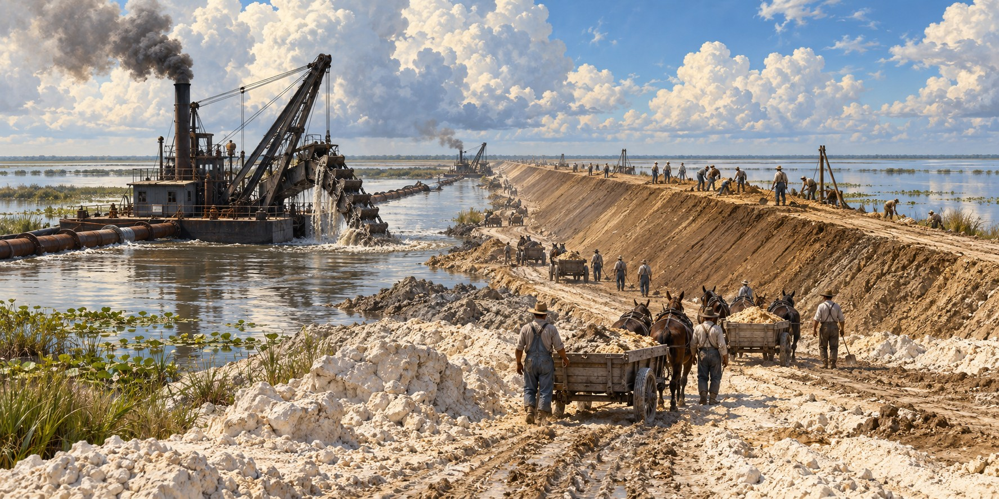

Building the Herbert Hoover Dike
How a Small Shoreline Embankment Became a 143 Mile Flood Protection System

The first embankment around Lake Okeechobee was not a federal engineering project at all. Local farming interests built it around 1915, piling sand and muck along the shore in a wall that in places stood only two to four feet high, enough for an ordinary rainy season but never meant to withstand a hurricane. It was overtopped in 1926 and 1928. What followed was nearly a century of building, renaming and rebuilding, ending with an underground cutoff wall and a major rehabilitation effort.
A Wall That Was Never Meant to Hold
The 1926 Great Miami Hurricane and the 1928 Okeechobee Hurricane both overtopped and breached the informal embankments, causing severe flooding and heavy loss of life. The Legislature later responded to these disasters by creating the Okeechobee Flood Control District to work with the U.S. Army Corps of Engineers. That alone produced no engineering solution; it took the second disaster, and national attention, to set construction in motion.
A Comprehensive Plan
Herbert Hoover came to the disaster with an unusual résumé: a mining engineer by training, he had led the federal relief effort after the Great Mississippi Flood of 1927. After the 1928 hurricane, the Corps was directed to draft a comprehensive plan: floodway channels, control gates and major levees along the lake’s entire shoreline, designed, in the Corps’ stated language, not only for flood control but for water conservation, prevention of saltwater intrusion, and preservation of fish and wildlife.
Relief Labor and Dredged Muck
Congress authorized the first phase in the River and Harbor Act of 1930: 67.8 miles of levee along the south shore and 15.7 miles along the north. The Corps built it between 1932 and 1938, substantially with Depression-era relief labor, to crest elevations of 32 to 35 feet. Dredge-and-fill crews excavated gravel, rock, limestone, sand and shell from borrow canals beside the lake and piled it into the embankment. That method also set a trap: the dike’s foundation rested on the same porous limestone, sand and peat that made the surrounding land prone to seepage.
A Second Phase, a New Name
The 1947 flood convinced Congress that the region remained vulnerable, and the Flood Control Act of 1948 authorized a second phase. It added 59 miles of levee, enclosing the lake and bringing the structure to its present 143-mile length. Construction continued into the late 1960s, raising and strengthening different sections. It was dedicated as the Herbert Hoover Dike in 1961. Its only true gap is at Fisheating Creek, where the dike turns inland and runs parallel to the stream, preserving the lake’s last free-flowing natural tributary.
“An Almost Certain Breach”
In 1998 an independent panel of geotechnical experts examined the dike and found “an unacceptable risk to public safety even at relatively low lake levels,” with a breach “almost certain” at lake levels only a few feet above the regulation schedule. The cause was seepage and “piping,” in which water moving through the porous foundation of sand, peat and limestone karst erodes soil from inside the embankment while the outside looks unchanged. After the destructive 2004 and 2005 hurricane seasons, the federal government made the dike’s safety an urgent priority.
A Wall Inside the Wall
The Corps’ rehabilitation included more than 56 miles of underground cutoff wall through vulnerable sections, plus replacements of water-control structures. At its January 2023 completion celebration, the Corps reported about $1.5 billion invested against an original $1.8 billion estimate. Final risk-reduction work finished in early 2023. The barrier reduces seepage through the earthwork rather than relying only on a higher crest.
Quick Facts
| Original embankment | About 1915; sand and muck, 2–4 feet high in places |
|---|---|
| First phase | Authorized 1930; built 1932–1938; Depression-era relief labor |
| Second phase | Authorized 1948; completed late 1960s |
| Length | 143 miles |
| Renamed | Dedicated as Herbert Hoover Dike in 1961 |
| Only gap | Fisheating Creek |
| 1998 panel | “Unacceptable risk to public safety”; breach “almost certain” a few feet above regulation |
| Cutoff wall | More than 56 miles; final risk-reduction work completed early 2023; $1.8 billion was the original estimate |
Did You Know?
The first Lake Okeechobee embankment was built by local farmers and stood 2–4 feet high in places.
The dike has one deliberate gap, at Fisheating Creek.
A hidden underground wall now runs inside part of the dike.
Vocabulary
Piping: erosion in which water moving through a dam or levee carves small channels inside it.
Cutoff wall: an underground barrier built into a dam to stop seepage.
Dredge and fill: building land or embankments by scooping material from one place and placing it in another.
Discussion Questions
1. Why did the dike’s construction method create its own long-term weakness?
2. What does the 1998 finding suggest about infrastructure built after a disaster?
Related Articles
FLH-0004 — The Okeechobee Hurricane of 1928
FLH-0025 — The Flood That Changed South Florida
FLH-0027 — Why Lake Okeechobee Became Dangerous
FLH-0029 — Take Care of the Water
Sources
U.S. Army Corps of Engineers, Jacksonville District. “Herbert Hoover Dike” and “Herbert Hoover Dike Dam Safety Modification Study.” saj.usace.army.mil
Association of State Dam Safety Officials. “Herbert Hoover Dike Major Rehabilitation.” damsafety.org
DVIDS / U.S. Army. “USACE Celebrates Completion of the Herbert Hoover Dike Restoration Project.” dvidshub.net
South Central Florida Life. “Herbert Hoover Dike Repairs in the ‘Home Stretch.’” lakeonews.com
WINK News. “What Exactly Is the Herbert Hoover Dike and Why Is It Important?” winknews.com
Herbert Hoover Presidential Library. “Herbert Hoover, President-Elect — A Florida Vacation.” hoover.blogs.archives.gov
Florida International University, Everglades Digital Library. Timeline of Hoover Dike construction. everglades.fiu.edu
Wikipedia. “Herbert Hoover Dike.”
USACE — Herbert Hoover Dike history and risk reduction